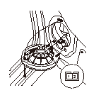
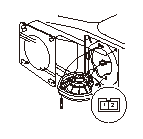
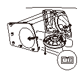

スピーカの点検、交換
フロント
フロント ドア ライニングを取外す。
•
スパイクを除く
•
スパイク
ボルト（A）を外し、スピーカ（B）を上に引き上げてクリップ（C）を外す。
カプラ（D）の接続を外し、スピーカを取外す。
スピーカ2PカプラのNo.1端子とNo.2端子間の抵抗を測定する。基準値から外れている場合は、スピーカを交換する。
基準値 約4.0Ω
取付けは、取外しの逆の手順で行う。

リヤ
スパイクを除く
スピーカ リッド（A）を取外す
ボルト（B）を外し、スピーカ（C）を上に引き上げてクリップ（D）を外す。
カプラ（E）の接続を外し、スピーカを取外す。
スピーカ2PカプラのNo.1端子とNo.2端子間の抵抗を測定する。基準値から外れている場合は、スピーカを交換する。
基準値 約4.0Ω
取付けは、取外しの逆の手順で行う。

スパイク
スピーカ リッド（A）を取外す
ボルト（B）を外し、スピーカ（C）を上に引き上げてクリップ（D）を外す。
カプラ（E）の接続を外し、スピーカを取外す。
スピーカ2PカプラのNo.1端子とNo.2端子間の抵抗を測定する。基準値から外れている場合は、スピーカを交換する。
基準値 約4.0Ω
取付けは、取外しの逆の手順で行う。
